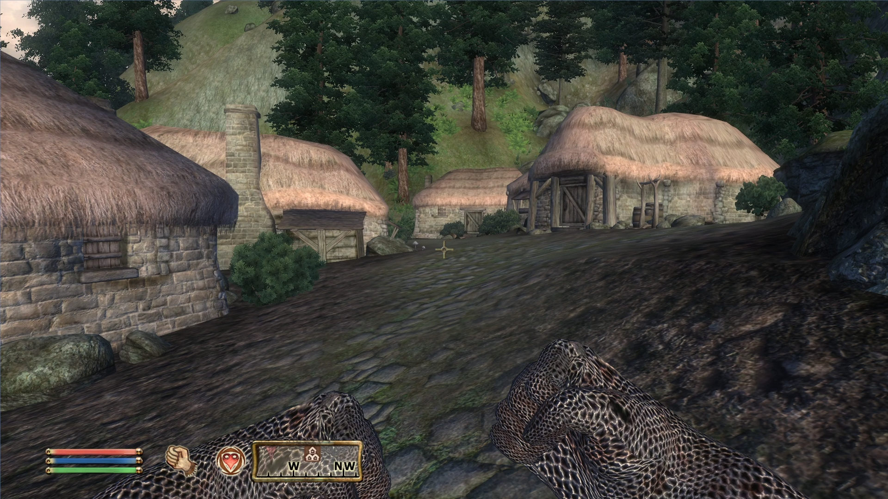
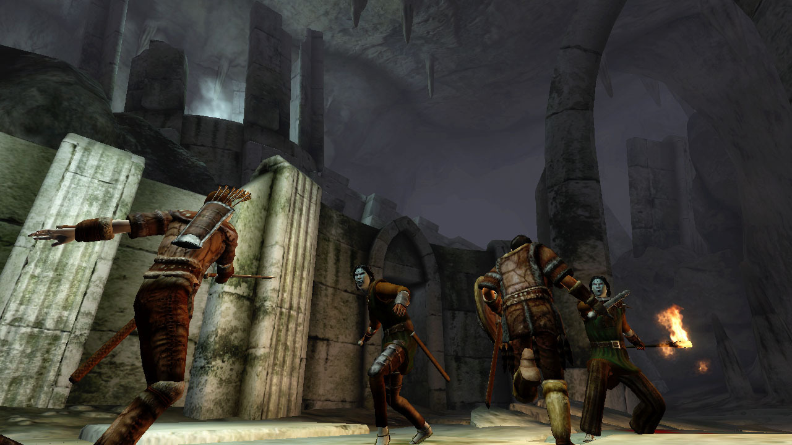

The Map
Oblivion's Map is a massive 41 km squared, that's two thirds the size of vancouver!
Imperial City

The Imperial City is one of the many castles located on oblivion. It is the main city where your story begins, it contains a huge marketplace and many inns.
Towns & Villages
There are many small cities and villages scattered across the map, all with unique npcs, inns, and shops.
Caves
Oblivion's Sheer number of explorable caves are incredibly high, all of them have secret passageways, chests, enemies, and even secret cults...